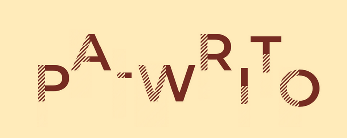

The American Psychological Association (APA) style is commonly used for citing references
in science and social science courses, such as Nursing, Psychology, Economics, and Social Work.
The examples used are based on the 6th edition published in 2010.
Include an in-text citation when you refer to, summarize, paraphrase, or quote from another source. For every in-text citation in your paper, there must be a corresponding entry in your reference list.
APA in-text citation style uses the author's last name and the year of publication, for example: (Field, 2005). For direct quotations, include the page number as well, for example: (Field, 2005, p. 14). For sources such as websites and e-books that have no page numbers, use a paragraph number. More information on citing sources without pagination is given on the APA Style web page.
Example paragraph with in-text citation:
A few researchers in the linguistics field have developed training programs designed to improve native speakers' ability to understand accented speech (Derwing, Rossiter, & Munro, 2002; Krech Thomas, 2004). Their training techniques are based on the research described above indicating that comprehension improves with exposure to non-native speech. Derwing et al. (2002) conducted their training with students preparing to be social workers, but note that other professionals who work with non-native speakers could benefit from a similar program.
References:
Derwing, T. M., Rossiter, M. J., & Munro, M. J. (2002). Teaching native speakers to listen to foreign-accented speech. Journal of Multilingual and Multicultural Development, 23(4), 245-259.
Krech Thomas, H. (2004). Training strategies for improving listeners' comprehension of foreign-accented speech (Doctoral dissertation)University of Colorado, Boulder.
Citing Web Pages In Text:
Cite web pages in text as you would any other source, using the author and date if known. If the author is not known, use the title and the date as the in-text citation (for long titles just use the first few words). Your in-text citation should lead your reader to the corresponding entry in the reference list. For sources with no date use n.d. (for no date) in place of the year: (Smith, n.d.). Below are examples of using in-text citation with web pages.
Web page with author:
In-text citation:
Role-play can help children learn techniques for coping with bullying (Kraiser, 2011).
References:
Kraizer, S. (2011). Preventing bullying.Retrieved from http://safechild.org/categoryparents/preventing-bullying/.
Web page with no author:
In-text citation:
The term Nittany Lion was coined by Penn State football player Joe Mason in 1904 (All things Nittany, 2006).
References:
All things Nittany. (2006). Retrieved from http://www.psu.edu/ur/about/nittanymascot.html.
Citing a Government Publication:
APA Citation Style does not have a separate category for government publications. According to APA, government documents can be considered Books, Technical/Research Reports or Brochures.
Helpful Tips:
- Treat a government document as a book, report, or brochure.
- If a person is named on the title page, use her or him as author.
- If no person is named, use the government agency, department, or branch as a group author.
Example 1: When the author and govt agency or department are known.
In-Text Citation (Paraphrase):
(Kapoor and Sinha, 2021)
In-Text Citation (Quotation):
(Kapoor and Sinha, 2021, p. 77)
References:
Kapoor and Sinha (2021). India Innovation Index Report
NITI Aayog
Example 2: When the author is not known.
In-Text Citation (Paraphrase):
(NITI Aayog, Digital Banks..., 2022)
In-Text Citation (Quotation):
(NITI Aayog,Digital Banks..., 2022, p. 7)
References:
Digital Banks: A Proposal for Licensing & Regulatory
Regime for India(2022).
NITI Aayog
Example 3: When there are more than three authors.
In-Text Citation (Paraphrase):
(Saraswat et al., 2022)
In-Text Citation (Quotation):
(Saraswat et al., 2022, p. vii)
References:
Saraswat et al.(2022) Forecasting Penetration of Electric Two-Wheelers in India.
NITI Aayog. Retrieved from https://www.niti.gov.in/sites/default/files/2022-06/ForecastingPenetration-ofElectric2W_28-06.pdf